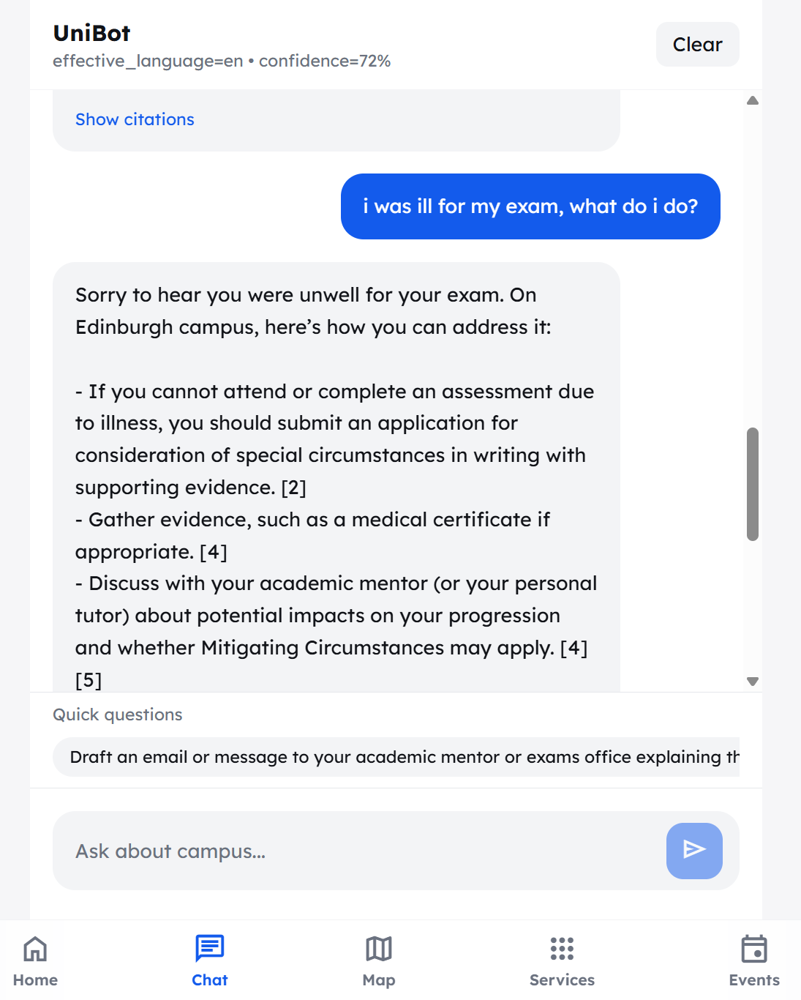
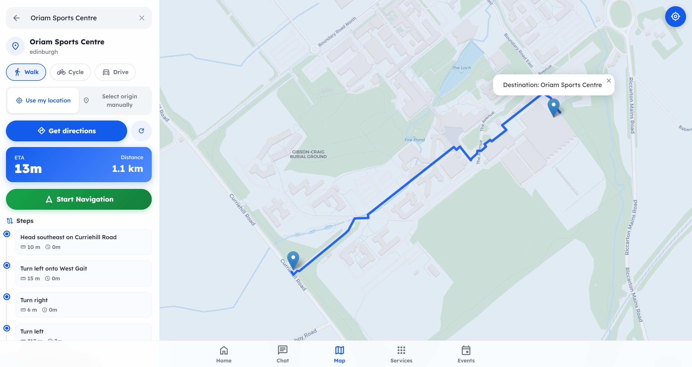

Honours Project 2025–26
UniBot
Supporting New Students Orienting Themselves on Campus
Honours Project 2025–26
Supporting New Students Orienting Themselves on Campus
Noman Maqsudi · H00406480
BSc (Hons) Computer Science
Supervisor: Dr. Marta Romeo
RAG Multilingual Campus Navigation FastAPI React ChromaDB
01 · Motivation
An AI-driven assistant combining RAG with verified HWU data can provide continuous, personalised, multilingual support — available 24/7, not just during Welcome Week.
Few university onboarding systems integrate verified institutional data, multilingual AI translation, or sustained engagement beyond initial orientation.
02 · Aim
Enhance new and international students' onboarding at HWU through an AI assistant providing personalised, multilingual, context-aware support.
Three-tier query routing - pattern matching → keyword detection → LLM fallback - reducing API costs by ~85%
Translate → Retrieve → Generate → Translate pipeline across 4 languages with session language locking
Interactive Leaflet.js maps with OpenRouteService routing and translated turn-by-turn directions
Web crawler across 4 HWU domains with recursive chunking (300 tokens, 50-token overlap) and de-duplication via MD5 hashing
Source citations on every response with clickable URLs — 0% hallucination rate in evaluation
03 · Approach
React 18 SPA · Tailwind CSS · Dark mode · Responsive · Leaflet.js maps · Language selector with auto-detect
FastAPI backend · Agentic RAG orchestrator · Language detection · Query routing · Citation extraction · OpenAI API (GPT-4o-mini + text-embedding-3-small)
ChromaDB vector store (HNSW indexing, cosine similarity) · Campus places JSON · OpenRouteService routing
03 · Approach
The primary technical contribution - autonomous routing that progressively escalates from fast, deterministic rules to LLM reasoning only when necessary.
Regex detects greetings, farewells, social queries → pre-composed responses. Zero LLM cost.
40+ university keywords (library, visa, exam, society…) and intent patterns. Routes directly to retrieval. Zero LLM cost.
Fallback for ambiguous/compound queries. Returns structured JSON with action + reasoning. Uses last 4 messages for context.
Result: ~85% of queries resolved deterministically - saving cost, reducing latency (1–3s per LLM call avoided), and preserving rate-limited API capacity.
03 · Approach
04 · Results & Demo

Chat Interface Screenshot
Chat with citations & follow-ups
Multilingual Chat Screenshot
Multilingual response (Chinese)

Map Interface Screenshot
Campus map with routing
React 18 SPA · Dark mode · Responsive layout · Source citations with clickable URLs · Follow-up suggestions
04 · Results
04 · Results
Ease of Use - "It felt like asking a friend who already knows the university."
Trust & Credibility - "The fact that it shows where the information comes from makes me trust it more than just ChatGPT."
Multilingual Value - "Being able to ask in Chinese and get a proper answer was really helpful."
Navigation Utility - "The map would have saved me so much time during Welcome Week."
Improvement Ideas - Real-time timetables, voice input, mobile app, RTL text improvements
| Language | Detection | Retrieval | Quality |
|---|---|---|---|
| English | N/A | 100% | N/A |
| Chinese | ✓ Correct | 100% | 4.2 / 5 |
| Hindi | ✓ Correct | 100% | 3.8 / 5 |
| Arabic | ✓ Correct | 100% | 3.8 / 5 |
Largest usability gaps were for multilingual tasks (baseline success 0.70 vs. UniBot 2.00) and accommodation queries (baseline 0.90 vs. 2.00) - precisely where information is linguistically inaccessible or fragmented across sites.
05 · Reflection
Multi-campus deployment - Architecture already supports campus filtering; extend KB to Dubai, Malaysia, Orkney
Live data integration - Connect to HWU timetable API and events calendar for real-time responses
Personalisation via SSO - Programme-specific and year-specific responses without manual context
Voice & mobile - Speech-to-text for hands-free campus navigation; native mobile app
Continuous learning - Track follow-up clicks and CLARIFY triggers to refine routing keywords automatically
Summary
Modular, open-source, and designed for replication — any university can deploy it by replacing the knowledge base and campus geodata.
Noman Maqsudi · H00406480
Thank you - Questions?